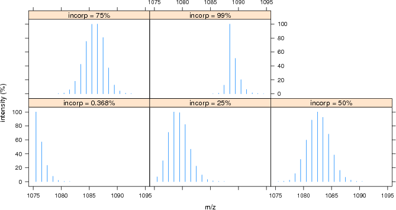
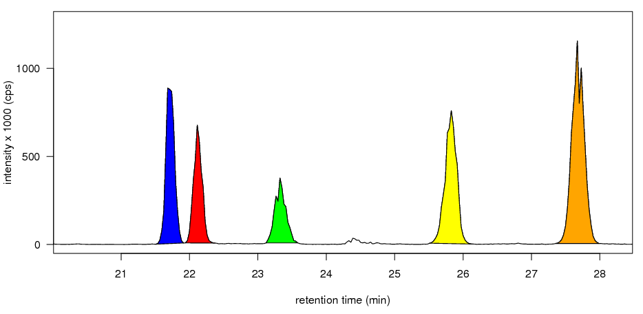
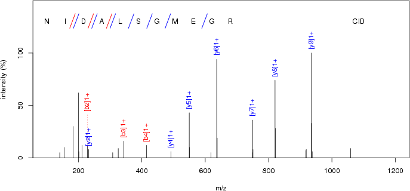
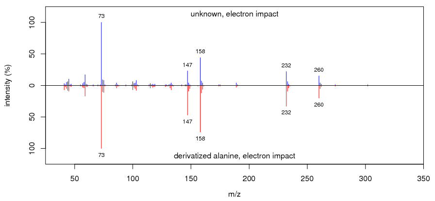

OrgMassSpecR, Organic Mass Spectrometry with R, is an extension for the R language and environment for statistical computing and graphics. It contains functions to assist with instrument operation and data analysis.
This project is under continuous development.
Reference illustrating the use of functions IsotopicDistributionN, Digest, and FragmentPeptide: Liao WL, Heo GY, Dodder NG, Pikuleva IA, Turko IV, Optimizing the Conditions of a Multiple Reaction Monitoring Assay for Membrane Proteins: Quantification of Cytochrome P450 11A1 and Adrenodoxin Reductase in Bovine Adrenal Cortex and Retina, Anal. Chem. 2010 Jun 3. [Epub ahead of print].
The current version is on the R-Forge OrgMassSpecR project summary page, under R Packages.
Download and install OrgMassSpecR using the following command, or download the binary file appropriate for your operating system and install using the R menu system (for example, on Windows go to Packages, then Install package(s) from local zip files...).
install.packages("OrgMassSpecR",repos="http://R-Forge.R-project.org")
Load OrgMassSpecR in your current session with the following command.
library(OrgMassSpecR)
Documentation and examples for each function are available. For example
?FragmentPeptide
will show the documentation for the function FragmentPeptide. Run the examples by copying and pasting the code in to the R console.
Information about the package and a list of included functions and data sets can be displayed with the following command.
help(package = "OrgMassSpecR")
ConvertPeptide: Convert single amino acid codes to an elemental formula or three letter codes.
DeadVolume: Calculate the internal volume of a defined length of tubing.
Digest: Cleave an amino acid sequence (a protein or peptide) according to enzyme specific rules and calculate the precursor ion m/z values.
DrawChromatogram: Plot a chromatogram, color the area under specified peak(s), and calculate the peak area(s).
ExchangeableAmides: Determine the number of backbone amide hydrogens given a protein/peptide sequence. Used in hydrogen-deuterium exchange experiments.
FlowTime: Calculate the time required for a liquid to flow through a defined length of tubing.
FragmentPeptide: Determine the b- and y-ions or c- and z-ions produced by the fragmentation of a peptide by tandem mass spectrometry.
IsotopicDistribution: Simulate the isotopic distribution of an organic molecule.
IsotopicDistributionHDX: Simulate the isotopic distribution of a peptide undergoing hydrogen-deuterium exchange.
IsotopicDistributionN: Simulate the isotopic distribution of a peptide with varying amounts of nitrogen-15 incorporation.
MolecularWeight: Calculate the molecular weight of an organic molecule.
MonoisotopicMass: Calculate the monoisotopic mass or monoisotopic m/z value of an organic molecule.
PeptideSpectrum: Plot a peptide fragmentation mass spectrum, with the b- and y-ions or c- and z-ions identified.
SpectrumSimilarity: Generate a head-to-tail plot of two mass spectra and calculate a similarity score.
Simulated isotopic distributions of peptide NECFLQHK with varying nitrogen-15 incorporation; function IsotopicDistributionN.
Highlighted peaks; function DrawChromatogram.
Peptide fragmentation mass spectrum; function PeptideSpectrum.
GC/MS spectrum similarity; function SpectrumSimilarity
